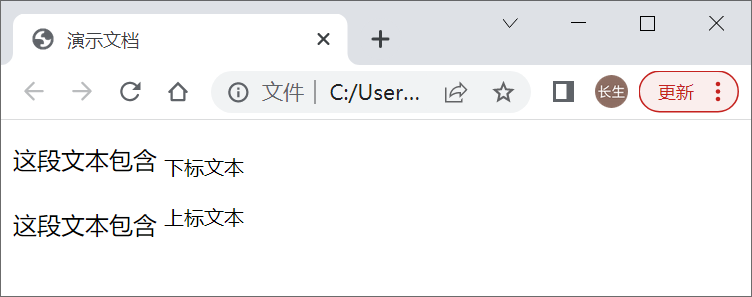
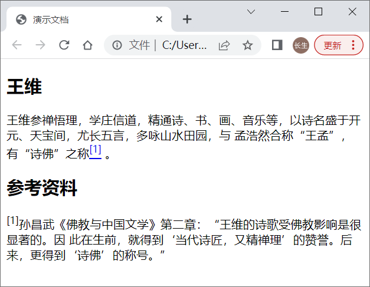
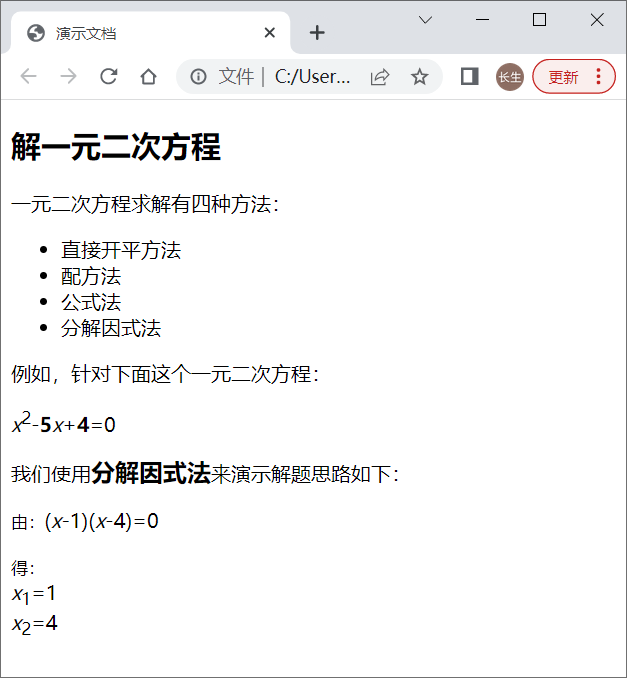

首页 > 编程笔记
HTML上标和下标：<sup>和<sub>标签
HTML 使用 <sup> 标签定义上标，使用 <sub> 标签定义下标；上标文本比主体文本位置稍高，下标文本比主体文本位置稍低。
常见的上标包括商标符号、指数和脚注编号等，常见的下标包括化学符号等。
具体用法请看下面的例子：
为文章中每个脚注编号创建链接，指向 footer 内对应的脚注，从而让访问者更容易找到它们。同时，链接中的 title 属性提供了一些提示。
上标是对某些外语缩写词进行格式化的理想方式。例如，法语中用 Mlle 表示 Mademoiselle（小姐），西班牙语中用 3a 表示tercera（第三）。此外，一些数字形式也要用到上标，如 2nd、5th。下标适用于化学分子式，如 H2O。
sub 和 sup 元素会轻微地增加行高，不过使用 CSS 可以修复这个问题。修复样式代码如下：
最终演示效果：
常见的上标包括商标符号、指数和脚注编号等，常见的下标包括化学符号等。
具体用法请看下面的例子：
<p>这段文本包含 <sub>下标文本</sub></p> <p>这段文本包含 <sup>上标文本</sup></p>演示效果：

示例1
sup 元素的一种用法就是表示脚注编号。根据从属关系，将脚注放在 article 的 footer 里，而不是整个页面的 footer 里。
<article>
<h1>王维</h1>
<p>王维参禅悟理，学庄信道，精通诗、书、画、音乐等，以诗名盛于开元、天宝间，尤长五言，多咏山水田园，与
孟浩然合称“王孟”，有“诗佛”之称<a href="#footnote-1" title="参考注释"><sup>[1]</sup></a> 。</p>
<footer>
<h2>参考资料</h2>
<p id="footnote-1"><sup>[1]</sup>孙昌武《佛教与中国文学》第二章：“王维的诗歌受佛教影响是很显著的。因
此在生前，就得到‘当代诗匠，又精禅理’的赞誉。后来，更得到‘诗佛’的称号。”</p>
</footer>
</article>
演示效果：

为文章中每个脚注编号创建链接，指向 footer 内对应的脚注，从而让访问者更容易找到它们。同时，链接中的 title 属性提供了一些提示。
上标是对某些外语缩写词进行格式化的理想方式。例如，法语中用 Mlle 表示 Mademoiselle（小姐），西班牙语中用 3a 表示tercera（第三）。此外，一些数字形式也要用到上标，如 2nd、5th。下标适用于化学分子式，如 H2O。
sub 和 sup 元素会轻微地增加行高，不过使用 CSS 可以修复这个问题。修复样式代码如下：
sub, sup {
font-size: 75%;
line-height: 0;
position: relative;
vertical-align: baseline;
}
sup { top: -0.5em; }
sub { bottom: -0.25em; }
用户可以根据内容的字号对 CSS 做一些调整，以使各行行高保持一致。
示例2
对于下面数学解题演示的段落文本，使用格式化语义结构能够很好地解决数学公式中各种特殊格式的要求。对于浏览器来说，也能够很好地理解它们的用途。
<article>
<h1>解一元二次方程</h1>
<p>一元二次方程求解有四种方法：</p>
<ul>
<li>直接开平方法 </li>
<li>配方法 </li>
<li>公式法 </li>
<li>分解因式法</li>
</ul>
<p>例如，针对下面这个一元二次方程：</p>
<p><i>x</i><sup>2</sup>-<b>5</b><i>x</i>+<b>4</b>=0</p>
<p>我们使用<big><b>分解因式法</b></big>来演示解题思路如下：</p>
<p><small>由：</small>(<i>x</i>-1)(<i>x</i>-4)=0</p>
<p><small>得：</small><br />
<i>x</i><sub>1</sub>=1<br />
<i>x</i><sub>2</sub>=4</p>
</article>
在上面代码中：
- 使用 i 元素定义变量x以斜体显示；
- 使用 sup 定义一元二次方程中的二次方；
- 使用 b 加粗显示常量值；
- 使用 big 和 b 加大加粗显示“分解因式法”这个短语；
- 使用 small 缩写操作谓词“由”和“得”的字体大小；
- 使用 sub 定义方程的两个解的下标。
最终演示效果：

关注公众号「站长严长生」，在手机上阅读所有教程，随时随地都能学习。内含一款搜索神器，免费下载全网书籍和视频。

微信扫码关注公众号